 AD>>CC
2022 • 1 sa 32 dk
Bilim Kurgu, Aile, Komedi, Animasyon, Aksiyon-Macera
Dünya’daki çevre kirliliğini çözmeye çalışan bilimciler, bütün
çöpleri toplayıp, roketlerle uzaya fırlatırlar. Ancak bu çöpler
uzaylıların yaşam alanlarını kirletir. Bunun üzerine sinirlenmiş
olan uzaylılar intikam için Dünya’ya gelirler. Kral Şakir ve ailesi
de Dünya’yı yok etmek isteyen uzaylılara engel olmaya çalışır.